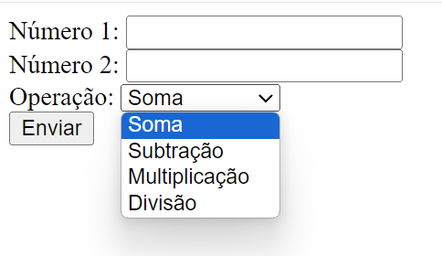

By Giovanni Francesco Guarnieri
By Giovanni Francesco Guarnieri
O que é PHP?
PHP é uma linguagem de programação de uso geral, amplamente utilizada para o desenvolvimento de aplicações web. Ela é uma linguagem de script do lado do servidor, o que significa que o código é executado no servidor antes de ser enviado para o navegador do usuário.
Como PHP é uma linguagem executada no servidor, ela é capaz de interagir com bancos de dados, manipular arquivos e gerar conteúdo dinâmico. Isso a torna uma ferramenta poderosa para a criação de sites e aplicações web interativas e dinâmicas.
Como executarmos código localmente?
Para trabalharmos com PHP localmente é necessário instalar um servidor web, como o Apache, um interpretador PHP e um servidor de banco de dados, como o MySQL. Existem pacotes que já incluem esses servidores, como o XAMPP e o WampServer.

Onde colocarmos os códigos PHP?
Os códigos PHP devem ser colocados em arquivos com a extensão .php. Esses arquivos devem
ser
colocados na pasta do servidor web, que geralmente é a pasta c:/xampp/htdocs/ no caso do
Apache.
No WAMP Server, a pasta é c:/wamp64/www/.
Para
acessar o código, basta digitar o endereço do servidor web no navegador, seguido do caminho do arquivo.
Sintaxe Básica
O código PHP é delimitado por tags <?php e ?>. O código PHP pode ser
inserido em qualquer lugar do arquivo HTML.
<?php
echo "Olá, Mundo!";
?>
O comando echo é usado para imprimir texto na tela.
Desde que o arquivo esteja com a extensão .php, é possível inserir código PHP em qualquer lugar do arquivo HTML.
Por exemplo:
<!DOCTYPE html>
<html>
<head>
<title>Exemplo</title>
</head>
<body>
<?php
echo "Olá, Mundo!";
?>
</body>
</html>
Criação de variável
Para criar uma variável em PHP, basta usar o caractere $ seguido do nome da variável.
<?php
$nome = "Giovanni";
echo $nome;
?>
Não é necessário declarar o tipo da variável, pois PHP é uma linguagem de tipagem dinâmica. Isso quer dizer que o tipo da variável é definido no momento da atribuição.
Estruturas Condicionais
De maneira geral, as estruturas condicionais são parecidas com as de outras linguagens de programação.
Em PHP, temos as estruturas if, else e else if.
<?php
$idade = 18;
if ($idade >= 18) {
echo "Maior de idade";
} else {
echo "Menor de idade";
}
?>
Não é necessário declarar o tipo da variável, pois PHP é uma linguagem de tipagem dinâmica. Isso quer dizer que o tipo da variável é definido no momento da atribuição.
Operadores Matemáticos, Relacionais e Lógicos
PHP suporta os operadores matemáticos básicos, como adição, subtração, multiplicação e divisão. Além disso, também suporta operadores relacionais e lógicos.
Lista de operadores matemáticos:
| Operador | Descrição |
|---|---|
+ |
Adição |
- |
Subtração |
* |
Multiplicação |
/ |
Divisão |
% |
Módulo |
| Operador | Descrição |
|---|---|
== |
Igual |
!= |
Diferente |
> |
Maior |
< |
Menor |
>= |
Maior ou igual |
<= |
Menor ou igual |
| Operador | Descrição |
|---|---|
&& |
E |
|| |
Ou |
! |
Negação |
<?php
$idade = 18;
if ($idade >= 18) {
echo "Maior de idade";
} else {
echo "Menor de idade";
}
?>
Não é necessário declarar o tipo da variável, pois PHP é uma linguagem de tipagem dinâmica. Isso quer dizer que o tipo da variável é definido no momento da atribuição.
Variáveis Superglobais GET e POST
As variáveis superglobais $_GET e $_POST são usadas para coletar dados de
formulários HTML ou de requisições HTTP.
Essas variáveis são arrays associativos, o que significa que os dados são acessados por meio de chaves. Essas chaves são os nomes dos dados enviados para o servidor.
A variável $_GET é usada para coletar dados enviados por um formulário HTML com o método
GET. Já a variável $_POST é usada para coletar dados enviados por um formulário HTML com o
método POST.
Exemplo de formulário HTML:
<form action="pagina.php" method="post">
Nome: <input type="text" name="nome">
<input type="submit">
</form>
Exemplo de código PHP para coletar o valor do campo "nome" por POST:
<?php
$nome = $_POST['nome'];
echo $nome;
?>
Exemplo de código PHP para coletar o valor do campo "nome" por GET:
<?php
$nome = $_GET['nome'];
echo $nome;
?>
Os parâmetros GET são enviados na URL, enquanto os parâmetros POST são enviados no corpo da requisição.
O sinal de interrogação ? é usado para separar a URL dos parâmetros GET. Os parâmetros são
separados por &.
Exemplo de URL: http://localhost/pagina.php?nome=Giovanni&profissao=professor
Verificar se variável está definida
Para verificar se uma variável está definida, podemos usar a função isset().
<?php
if (isset($nome)) {
echo "A variável está definida";
} else {
echo "A variável não está definida";
}
?>
Exemplo de Calculadora com HTML, Requisição GET e PHP

Exemplo de formulário HTML:
<form action="calculadora.php" method="get">
Número 1: <input type="number" name="num1" required><br>
Número 2: <input type="number" name="num2" required><br>
Operação: <select name="operacao" required>
<option value="soma">Soma</option>
<option value="subtracao">Subtração</option>
<option value="multiplicacao">Multiplicação</option>
<option value="divisao">Divisão</option>
</select><br>
<input type="submit" value="Calcular">
<input type="reset" value="Limpar">
</form>
Exemplo de código PHP para calcular a operação:
<?php
if(isset($_GET['num1'], $_GET['num2'], $_GET['operacao'])) {
$num1 = $_GET['num1'];
$num2 = $_GET['num2'];
$operacao = $_GET['operacao'];
if ($operacao == "soma") {
$resultado = $num1 + $num2;
} else if ($operacao == "subtracao") {
$resultado = $num1 - $num2;
} else if ($operacao == "multiplicacao") {
$resultado = $num1 * $num2;
} else if ($operacao == "divisao") {
$resultado = $num1 / $num2;
}
echo "O resultado da operação é: " . $resultado;
}else{
echo "Preencha todos os campos";
}